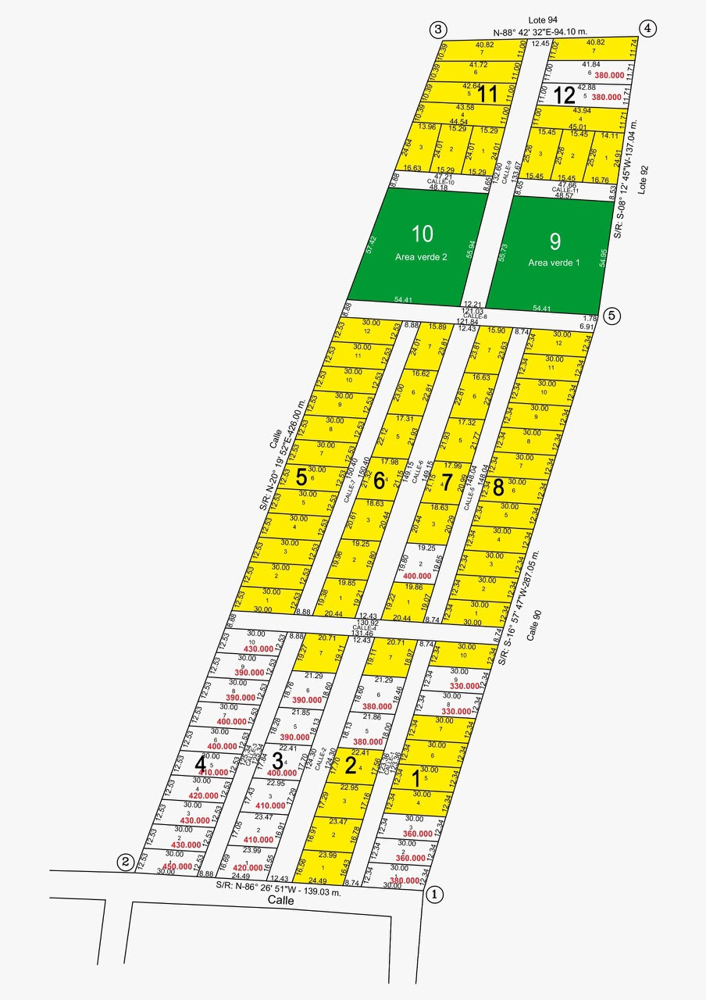

Cortador de Manzanas
Paso 1:
Haz 4 clics bordeando TODA una fila entera de terrenos (en orden: Arriba-Izq, Arriba-Der, Abajo-Der, Abajo-Izq).
Paso 2:
Indica en cuántos lotes se divide ese bloque y presiona Generar.
Prefijo (Ej: Manzana_A_Lote_):
Cantidad de Lotes en el bloque:
✂️ Cortar y Generar Código
🗑️ Limpiar Puntos